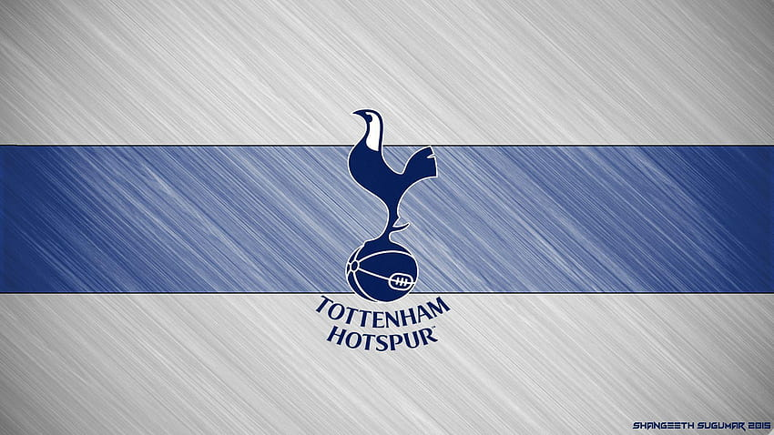

Tottenham Hotspur Football Club, commonly referred to as simply Tottenham or Spurs, is a professional football club based in Tottenham, London, England. It competes in the Premier League, the top flight of English football. The team has played its home matches in the 62,850-capacity Tottenham Hotspur Stadium since April 2019, replacing their former home of White Hart Lane, which had been demolished to make way for the new stadium on the same site.
